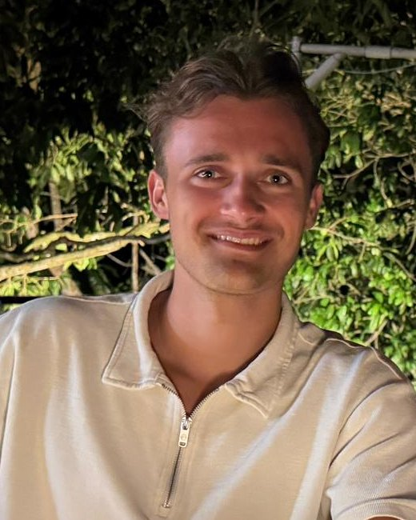
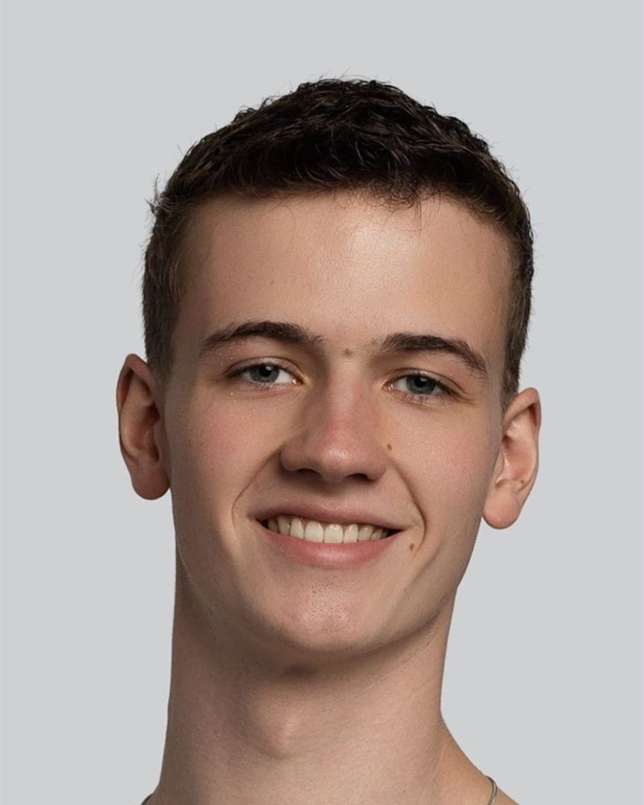

Lokaal
We zitten in Noord-Brabant en komen gewoon bij je langs.
Vaktijd is opgericht door Beau en Sander. We zitten allebei in de laatste jaren van onze studie bedrijfskunde en hebben veel interesse in AI en automatisering.
Wat we tijdens de opleiding leren over processen en organisaties, willen we toepassen waar het direct verschil maakt: bij kleine bedrijven in onze eigen regio. Ondernemers die liever met hun vak bezig zijn dan met papierwerk.
Minder administratie,
meer tijd voor je vak.

Ik ben Beau en zit in mijn derde jaar bedrijfskunde aan Avans Hogeschool.
Ik wilde altijd al zelf iets beginnen waarmee ik anderen kan helpen. Bij ondernemers om me heen zie ik hoeveel tijd er gaat zitten in werk dat eigenlijk vanzelf zou kunnen gaan.
Met Vaktijd bouw ik automatiseringen die dat werk uit handen nemen, in de programma's die je al gebruikt. Zo houd jij meer tijd over voor je vak.

Ik ben Sander. Ik woon in Someren en zit in mijn vierde jaar bedrijfskunde aan Fontys in Eindhoven.
Ik vind het mooi om te kijken hoe ik bedrijven kan helpen slimmer te werken. Vaak zit de winst niet in grote veranderingen, maar in het dagelijkse werk dat steeds terugkomt.
Met Vaktijd wil ik mensen juist daarmee helpen, zodat jij meer tijd overhoudt voor je eigen vak in plaats van voor de administratie.
We zijn net gestart en werken nu met een paar bedrijven uit ons eigen netwerk. Wil je een van de eersten zijn? We horen graag van je.
We zitten in Noord-Brabant en komen gewoon bij je langs.
Geen ingewikkelde systemen, maar oplossingen in je mail, Excel en WhatsApp.
AI helpt mee, maar beslist niets. Jij kijkt alles na voordat het de deur uit gaat.
Vertel kort waar je tegenaan loopt. De kennismaking is gratis.